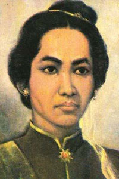

| pahalawan pria | | pahalawan wanita |
| Nama pahlawan | Deskripsi | media |
|---|---|---|
|
cutnya dhien |
cutnya dhien adalah seorang pahlawan indonesia dari aceh yang berjuan melawan belanda pada massa perang aceh setelah wilayah pada VI mukim di serang ia mengungsi sementara seuminya ibrahim lamnga bertempur melawan belanda sumber : wikipeda.com |
 |
RA. Kartini |
raden adjeng kartini atau sebenarnya lebih tepat di sebut raden ayu kartini adalah seorang tokoh jawa dan pahlawan nasional indonesia kartini dekenal sebagai pelopor kebangkitan petempuran pribumi sumber : wikipeda.com |